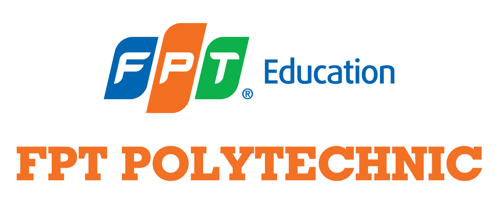
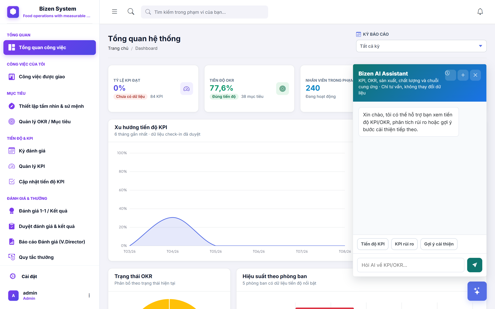
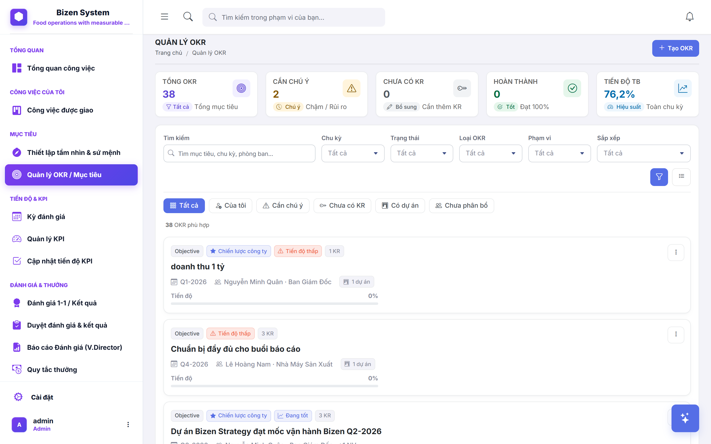
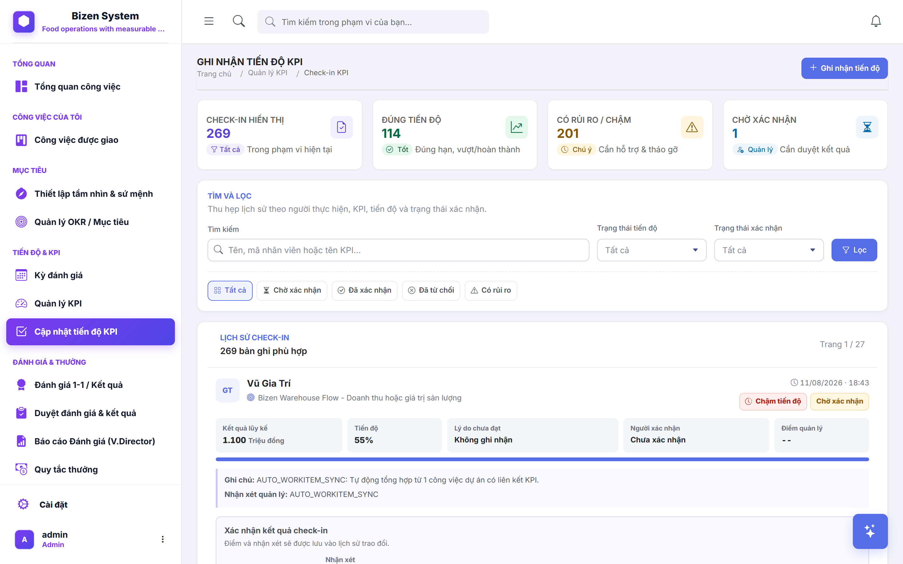

| → / Space | Slide tiếp theo |
| ← | Slide trước |
| Home | Slide đầu tiên |
| End | Slide cuối cùng |
| F | Toàn màn hình |
| T | Pause / Resume timer |
| R | Reset timer 30:00 |
| N | Bật / Tắt ghi chú trình bày |
| V | Play / Pause video demo |
| H / ? | Bảng phím tắt này |
| Esc | Đóng popup |

Quân: Giới thiệu đề tài, thực trạng, yêu cầu khách hàng, hướng giải quyết, mục tiêu, tầm nhìn, định hướng phát triển
Quân & Phong: Kiến trúc AI-Native, 9 luồng AI, RAG Pipeline, so sánh trước/sau
Như (Frontend) & An (Backend): Giao diện + chức năng OKR 3 cấp, KPI check-in, đánh giá, bảo mật
Nhật (Frontend) & Bảo (Backend): Kanban Board, liên kết KPI/OKR, quản lý dự án trực quan
Phong: Hệ thống danh mục, cá nhân hóa, SaaS multi-tenant, tối ưu SEO
Khánh: Kế hoạch kiểm thử, 84 test suites, thống kê kết quả, ma trận bảo mật
Quân: Kiến trúc kỹ thuật, kết quả, hạn chế, video demo, cảm ơn
⏱ Tổng thời gian: 30 phút trình bày
Hỏi đáp riêng sau buổi thuyết trình
Doanh nghiệp vừa và nhỏ (SME) tại Việt Nam đang đối mặt với:
Thiết lập OKR 3 cấp (Công ty → Phòng ban → Cá nhân), KPI với ngưỡng Pass/Fail, check-in định kỳ tự động nhắc.
Kanban board quản lý dự án, phân công task, theo dõi tiến độ, tự động liên kết ngược KPI/OKR.
Phân tích dữ liệu vận hành, cảnh báo rủi ro, gợi ý KPI, đánh giá check-in, tư vấn chiến lược.
RBAC 60 quyền hạn, Row-Level Security SQL Server, phân quyền theo phòng ban, tenant isolation.
Multi-tenant SaaS, mỗi doanh nghiệp dữ liệu riêng biệt, gói cước linh hoạt, cá nhân hóa giao diện.
Dashboard tổng quan thời gian thực, xuất báo cáo Excel, biểu đồ ApexCharts, xếp hạng hiệu suất.
Xây dựng hệ thống quản lý vận hành thông minh tích hợp AI, phục vụ doanh nghiệp vừa và nhỏ quản lý mục tiêu, công việc và đánh giá nhân sự trên một nền tảng duy nhất.
Trở thành nền tảng SaaS vận hành thông minh hàng đầu cho doanh nghiệp SME Việt Nam, nơi mỗi quyết định được hỗ trợ bởi dữ liệu và AI.
Số hóa quy trình vận hành doanh nghiệp, nâng cao tính minh bạch trong đánh giá hiệu suất, hỗ trợ ra quyết định dựa trên dữ liệu — giảm thiểu thao tác thủ công, tối ưu hiệu suất quản lý.
Phát triển ứng dụng di động cho nhân viên check-in KPI, nhận thông báo, cập nhật task ngay trên điện thoại.
Kết nối Email, Zalo OA, Google Calendar để nhắc nhở deadline, gửi báo cáo tự động, đồng bộ lịch họp 1-on-1.
Dashboard phân tích kinh doanh nâng cao: dự báo hiệu suất, xu hướng KPI theo mùa, phân tích tương quan đa biến.
AI Agent phân tích dữ liệu vận hành định kỳ, tự động sinh báo cáo tuần/tháng, phát hiện anomaly, đề xuất cải tiến.
Cá nhân hóa AI theo từng doanh nghiệp, marketplace tích hợp phần mềm kế toán/nhân sự, thanh toán trực tuyến.
PotentialScore)IAIModelClient — DeepSeek V4 flashsourceIds| Tiêu chí | ❌ Trước (Thủ công) | ✅ Sau (Hệ thống + AI) |
|---|---|---|
| Quản lý mục tiêu | Excel rời rạc, không liên kết OKR↔KPI | OKR 3 cấp → KPI → Task liên kết tự động |
| Theo dõi tiến độ | Báo cáo cuối kỳ, chậm trễ, thiếu thực tế | Dashboard thời gian thực, check-in định kỳ |
| Đánh giá nhân viên | Cảm tính, không có rubric, thiên vị | 7 bậc xếp hạng tự động, rubric + AI hỗ trợ |
| Phát hiện rủi ro | Phát hiện muộn khi đã ảnh hưởng | Smart Alerts cảnh báo tức thì, AI phân tích xu hướng |
| Bảo mật dữ liệu | Ai cũng xem/sửa được, không audit log | RBAC 60 quyền + RLS SQL + Tenant isolation |
| Giao việc | Zalo/Email, dễ bỏ sót, không trace | Kanban 6 cột, liên kết KPI, bình luận, history |
sourceIds)DeepSeek V4 Flash qua IAIModelClient, Qdrant vector search, BGE-M3 embedding, MinIO lưu trữ tài liệu.

KpiSuggestionAdvisorGoalPlanningDraftServiceTính điểm tự tin 4 yếu tố:
| Quản lý chấm điểm thủ công, chủ quan |
| → AI đối chiếu dữ liệu, rubric chuẩn hóa |
| Không có thang đo, mỗi người chấm khác nhau |
| → Rubric versioned, nhất quán toàn hệ thống |
| Mất 30+ phút/nhân viên để đánh giá |
| → AI sinh draft 3-5 giây, quản lý chỉ cần duyệt |
Công cụ: CheckInAiEvaluator, CheckInAiConfidenceCalculator, EvaluationRubric
AIAlertServicePerformanceAnalysisAdvisorCustomerSegmentAdvisor🤖 Tổng cộng 9 luồng AI-Native: Chat, Gợi ý KPI, Goal Planning, Check-in Evaluator, OKR Key Result Advisor, Evaluation Review Draft, Customer Segment, Performance Analysis, Smart Alerts — tất cả đều có Human-in-the-loop

Giao diện thực tế cây mục tiêu OKR đa cấp & thanh đo tiến độ tự động

Màn hình Review Queue tập trung và form Check-in minh chứng minh bạch
Điểm tổng hợp phản ánh chính xác đóng góp thực tế:
✅ Toàn bộ thuật toán tính điểm và chuyển đổi trạng thái được kiểm thử qua 120+ Unit Tests xUnit, đảm bảo tính đúng đắn 100%.
Dữ liệu được bảo vệ tự động ngay tại tầng Database Engine:
✨ Kết quả: Chặn hoàn toàn nguy cơ rò rỉ dữ liệu giữa các công ty trong môi trường Cloud Multi-tenant SaaS.
Mô hình luồng công việc 6 cột chuẩn hóa, trực quan và không độ trễ:
HTML5 Drag & Drop mượt mà, đồng bộ trạng thái backend ngay khi buông chuột.
Nhận diện nhanh độ ưu tiên qua màu cờ: Urgent, High, Normal, Low.
Lọc theo thành viên, phòng ban, dự án và từ khóa chỉ trong 1 thao tác.
💡 Chuyển tiếp: Sau đây bạn Bảo sẽ trình bày phân hệ Backend Vận hành, giải thích cơ chế liên kết tự động giữa Task và KPI/OKR.
Mỗi Work Item gắn liền với mục tiêu chiến lược của công ty:
✨ Đảm bảo nguyên lý: 'Mọi nỗ lực hàng ngày của nhân viên đều đóng góp vào sự tăng trưởng của doanh nghiệp'.
🛡️ Hệ thống tự động vận hành ổn định 24/7 nhờ kiến trúc xử lý tác vụ nền không đồng bộ (Hosted Services trong .NET 10).
TenantId ở mọi câu truy vấn🚀 Tối ưu chi phí hạ tầng cho SME: Một doanh nghiệp mới đăng ký có thể bắt đầu sử dụng ngay sau 30 giây mà không cần cài đặt server riêng.
/sitemap.xml và /robots.txt động✨ Giúp giải pháp NEXTGEN dễ dàng tiếp cận hàng ngàn doanh nghiệp SME tiềm năng trên các công cụ tìm kiếm mà không tốn chi phí quảng cáo.
📄 Bản Test Plan v3.0 hoàn chỉnh và danh sách test cases đã được lưu trữ minh bạch trong thư mục test-artifacts của đồ án.
✅ Hệ thống đã được kiểm thử hồi quy nghiêm ngặt, sẵn sàng triển khai thực tế trên môi trường sản xuất.
Nhóm VietMach (Nhóm 98 — PRO2192.04) đã sẵn sàng tiếp nhận các câu hỏi và góp ý từ Hội đồng.